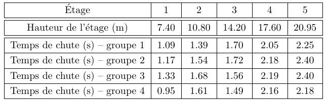

Ajustements de modèles#
Chute libre#
Des étudiants ont effectué une expérience de chute libre : ils ont fait tomber un objet de chaque étage de l’Atrium, sans vitesse initiale, et ont mesuré à chaque fois le temps de chute \(T\) de l’objet ainsi que la hauteur de l’étage \(H\). On reporte dans le tableau ci-dessous le résultat des mesures pour 4 groupes différents.

Nous savons que l’objet chute sous l’effet de la pesanteur. Nous voulons grâce à cette expérience déterminer la magnitude de la pesanteur. Pour cela, nous utilisons un modèle simple du temps de chute libre. On montre facilement d’après la loi fondamentale de la dynamique, si on néglige les frottements de l’air, le lien entre la hauteur de l’étage \(H\), le temps de chute \(T\), et la magnitude de la pesanteur \(g\) :
Identifier dans cette équation le(s) donnée(s) de l’expérience et le(s) paramètre(s) du modèle. Écrire les données sous la forme de tableaux numpy.
Écrire le modèle sous la forme d’une fonction python à ajuster, de la forme \(y(x;a)=ax\).
Déterminer la valeur de \(g\) en ajustant les données du 1er groupe. Afficher à l’écran la valeur trouvée, et faire un graphique sur lequel on voit le modèle (en ligne continue) et les données (marqueurs). On veillera à légender et mettre des titres aux axes et au graphique.
Ajuster les données des 4 groupes grâce à une boucle, et calculer la valeur de \(g\) comme la moyenne des résultats des 4 groupes.
Correction#
Show code cell source
import numpy as np
from scipy.optimize import curve_fit
import matplotlib.pyplot as plt
#1
# H et T sont les données de l'expérience
# g est un paramètre du modèle
# Écriture des données dans un tableau numpy
T = np.array([[1.09, 1.39, 1.70, 2.05, 2.25],
[1.17, 1.54, 1.72, 2.18, 2.40],
[1.33, 1.68, 1.56, 2.19, 2.40],
[0.95, 1.61, 1.49, 2.16, 2.18]])
H = np.array([7.40, 10.80, 14.20, 17.60, 20.95])
#2
# Modèle
def chute(x, a):
return a * x
#3
# Ajustement des données du 1er groupe
y = H
x = T[0, :] ** 2 / 2
params, covar = curve_fit(chute, x, y)
# Affichage de la valeur trouvée
print("Groupe 1 :")
print(" g = ", params[0], " m/s^2")
# Graphique
xm = np.linspace(0, 3, 100)
plt.plot(xm, chute(xm, params[0]))
plt.plot(x, y, '*')
plt.axis([0, 3, 0, 25])
plt.legend(('Modèle', 'Données'))
plt.title('Ajustement des données du groupe 1')
plt.xlabel('T**2/2 [s**2]')
plt.ylabel('H [m]')
plt.show()
#4
# Ajustement des données de tous les groupes
Ng = 4
g = np.empty(4)
for i in range(4):
# Ajustement des données du ième groupe
y = H
x = T[i, :] ** 2 / 2
params, covar = curve_fit(chute, x, y)
# Affichage de la valeur trouvée
print("Groupe", str(i + 1), ":")
print(" g =", params[0], "m/s^2")
g[i] = params[0]
# Graphique
plt.plot(xm, chute(xm, params[0]), label = "Groupe " + str(i) + ", modèle")
plt.plot(x, y, '*', label = "Groupe " + str(i) + ", expérience")
plt.axis([0, 3, 0, 25])
plt.legend(bbox_to_anchor = (1.05, 1.0))
plt.title('Ajustement des données du groupe 1')
plt.xlabel('T**2/2 [s**2]')
plt.ylabel('H [m]')
plt.show()
# Affichage de la valeur moyenne
print("Valeur Moyenne :")
print(" g =", np.mean(g))
Groupe 1 :
g = 8.830251326645204 m/s^2
Groupe 1 :
g = 8.830251326645204 m/s^2
Groupe 2 :
g = 7.833725959694802 m/s^2
Groupe 3 :
g = 7.738300675460513 m/s^2
Groupe 4 :
g = 8.725650823609033 m/s^2
Valeur Moyenne :
g = 8.281982196352388
Loi de puissance#
On va travailler sur les données des exoplanètes. Le but de l’exercice consiste à déterminer si les données expérimentales peuvent être ajustées par la fonction correspondant à la 3ème loi de Kepler.
Charger les données des exoplanètes du fichier
exoplanets.datet representer \(\log(R)\) en fonction de \(\log(T)\)Expliquer pourquoi la représentation graphique logarithmique est mieux adaptée que la représentation graphique linéaire.
Montrer également (par le calcul) qu’il est possible de faire une régression linéaire en utilisant la représentation mathématique logarithmique pour ajuster la 3ème loi de Kepler.
Effectuer la régression linéaire sur la troisième loi de Kepler, et comparer la valeur théorique du rapport des exposants \(3/2\) à la valeur expérimentale.
Correction#
Show code cell source
#1
# Importation des librairies
import matplotlib.pyplot as plt
import numpy as np
# Constantes
au = 149597870700.0
jour = 24 * 3600
# Chargement et conversion des données
d_exp = np.loadtxt('./exoplanets.dat')
R = d_exp[:, 0] * au
T = d_exp[:, 1] * jour
# Affichage des données
lR = np.log(R)
lT = np.log(T)
plt.plot(lR, lT, '.')
plt.xlabel("$\log(R)$")
plt.ylabel("$\log(T)$")
plt.show()
Question 2 L’échelle logarithmique permet de voir toutes les données dispersées sur plusieurs ordres de grandeur.
Question 3 De plus, si \(T^2 = K R^3\), alors \(\log(T) = \frac{3}{2} \log(R) + \frac{1}{2} \log(K)\)
==> On peut également tester la relation de proportionalité via un ajustement affine des distributions logarithmiques. On attend alors une pente de \(1.5\) et une ordonnée à l’origine égale à \(0.5\mathrm{log}(K)\).
Show code cell source
# 4
# Modèle
def line(x, a, b):
""" Loi linéaire """
return a * x + b
# Ajustement linéaire avec la fonction `line`
a, b = curve_fit(line, lR, lT)[0]
# Affichage des résultats
print('a =', a, '; b = ', b)
k = np.exp(2 * b)
print("K =", k, "s^2/m^3")
# Calcul du modèle
x = np.linspace(min(lR), max(lR))
y = a * x + b
# Affichage graphique des résultats
plt.plot(lR, lT, '.', label = 'données expérimentales')
plt.plot(x, y, label = 'modèle')
plt.title('Ajustement du modèle aux données')
plt.xlabel("$\log(R)$")
plt.ylabel("$\log(T)$")
plt.legend()
plt.show()
a = 1.4984474486188786 ; b = -21.332684268430178
K = 2.95573759848355e-19 s^2/m^3
Décroissance exponentielle#
On va ici tenter de modéliser la vitesse de décroissance de l’épaisseur de mousse de bière. On reprendra pour cela les données présentées par Arnd Leike, chercheur à l’Université Ludwig Maximilians de Munich, dans une publication qui lui a valu le prix Ig Nobel en 2002.
Récupérer les données présentées dans le tableau 1 de la publication disponible ici.
Représentez le logarithme décimal de l’épaisseur de mousse de la Augustinerbräu en fonction du temps : \(\log_{10}(h) = f(t)\).
Effectuez l’ajustement qui vous semble le plus approprié, et en déduire le modèle de décroissance auquel cet ajustement correspond. Déterminez le temps caractéristique de la décroissance.
Effectuez un ajustement exponentiel de la fonction \(h(t)\) (cf résultat ci-dessous), et comparez vos résultats à ceux de la question précédente.
Le taux de désintégration d’un matériau radioactif suit également une loi exponentielle. Peut-on trouver une analogie avec l’épaisseur de la mousse de bière ?
Dans le tableau 1 de l’article de Leike, l’auteur a également associé des incertitudes aux mesures d’épaisseur de mousses.
Représentez ces incertitudes graphiquement en utilisant la fonction
errorbarde matplotlib.Reprendre la question 3 en passant les erreurs \(\sigma_{y_i}\) dans le paramètre sigma de la fonction
curve_fit. On veillera à remplacer les valeurs d’incertitudes nulles par une valeur > 0 pour permettre la convergence de l’ajustement (cf équation de la somme S pondérée dans le cours).
On pourra remarquer qu’en plus des paramètres ajustés, un 2ème paramètre est retourné par la fonction curve_fit. Il s’agit de la matrice de covariance de ces paramètres (que l’on peut noter pcov, dont on peut extraire l’incertitude sur chacun des paramètres, donnée par perr = np.sqrt(np.diag(pcov)).
Correction#
Show code cell source
#1
# Données
h = np.array([14.0, 11.8, 10.5, 9.3, 8.5, 7.7, 7.1, 6.5, 6.0, 5.3, 4.4, 3.5, 2.9, 1.3, 0.7]) # cm
t = np.array([0, 15, 30, 45, 60, 75, 90, 105, 120, 150, 180, 210, 240, 300, 360]) # s
lh = np.log(h)
# Affichage graphique des données
plt.plot(t, lh, '+')
plt.xlabel('Temps (s)')
plt.ylabel('$\log(h)$')
plt.show()
Show code cell source
#2
def modlin(x, a, b):
""" Loi linéaire """
return a + b * x
# Ajustement linéaire
params, covar = curve_fit(modlin, t, lh, [14, -1])
# Affichage des résultats
print("(a, b) =", params)
print("tau =", -1 / params[1], "s")
# Calcul du modèle
t_model = np.linspace(min(t), max(t))
y_model = params[0] + params[1] * t_model
# Affichage graphique des résultats
plt.plot(t, lh, '.', label = 'données expérimentales')
plt.plot(t_model, y_model, label = 'modèle')
plt.title('Ajustement linéaire du modèle aux données')
plt.xlabel("$t$")
plt.ylabel("$\ln(h)$")
plt.show()
(a, b) = [ 2.65892185 -0.00758478]
tau = 131.84298472262253 s
Show code cell source
#3
def expLaw(x, A0, tau):
""" Loi exponentielle """
return A0 * np.exp(-x / tau)
# Ajustement exponentiel
params, covar = curve_fit(expLaw, t, h, [14, 200])
# Affichage des résultats
print(params)
print("tau =",params[1], "s")
# Calcul du modèle
t_model = np.linspace(min(t), max(t))
y_model = params[0] * np.exp(-t_model / params[1])
# Affichage graphique des résultats
plt.plot(t, h, '.', label = 'données expérimentales')
plt.plot(t_model, y_model, label = 'modèle')
plt.title('Ajustement exponentiel du modèle aux données')
plt.xlabel("$t~\mathrm{(s)}$")
plt.ylabel("$h~\mathrm{(cm)}$")
plt.legend()
plt.show()
[ 13.23332627 147.97364463]
tau = 147.97364463435574 s
On remarquera que l’ajustements linéaire de \(\mathrm{log}(h)\) et l’ajustement exponentiel de \(h\) produisent des valeurs différentes de la constante de temps \(\tau\) caractéristique de la décroissance définie par \(y = A_0 e^{-\frac{t}{\tau}}\) : \(131 \mathrm{~s}\) contre \(148 \mathrm{~s}\).
Question 4
L’évolution des deux phénomènes est modélisée par un phénomène sans mémoire (la désintégration des noyaux radioactifs ou l’éclatement des bulles). La loi est donc exponentielle.
Show code cell source
#5
dh = np.array([0.01, 0.3, 0.3, 0.5, 0.6, 0.6, 0.7, 0.8, 0.8, 1.1, 1.2, 0.9, 1.1, 0.7, 0.5])
# Affichage graphique des données avec incertitudes
plt.errorbar(t, h, dh)
plt.xlabel('Temps (s)')
plt.ylabel('$\log(h)$')
plt.show()
Show code cell source
#6
# Ajustement avec minimisation du chi2
params, pcov = curve_fit(expLaw, t, h, [14, 200], sigma = dh)
# Récupération des incertitudes à partir de la matrice de covariance
perr = np.sqrt(np.diag(pcov))
# Affichage des valeurs des paramètres et des incertitudes
a = params[0]
tau = params[1]
da = perr[0]
dtau = perr[1]
print('a =', a, '+-', da, 'cm')
print('tau =', tau, '+-', dtau, 's')
# Calcul du modèle
t_model = np.linspace(min(t), max(t))
h_model = expLaw(t_model, a, tau)
# Représentation graphique du modèle et des données
plt.errorbar(t, h, dh, label = 'données expérimentales')
plt.plot(t_model, h_model, label = 'modèle')
plt.title('Ajustement exponentiel du modèle aux données\nMinimisation du $\chi^2$')
plt.xlabel("$t~\mathrm{(s)}$")
plt.ylabel("$h~\mathrm{(cm)}$")
plt.legend()
plt.show()
a = 13.999072208208222 +- 0.00980623948341942 cm
tau = 123.23787106073566 +- 5.384389273019279 s